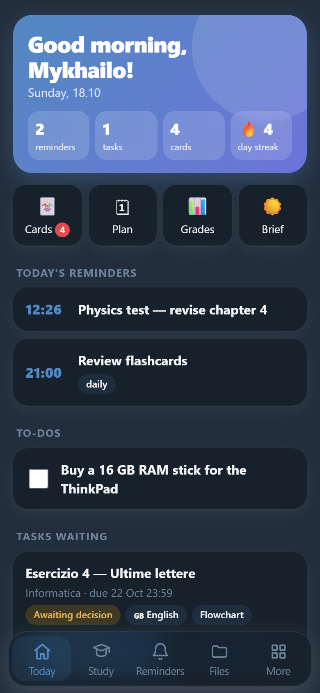
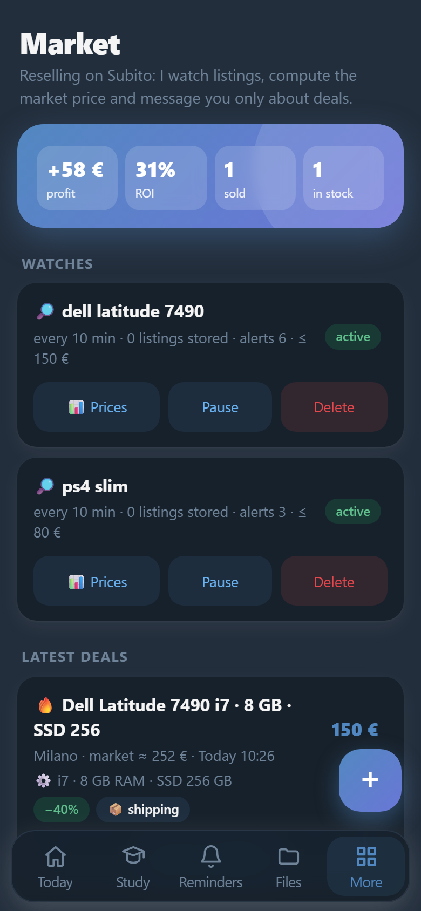
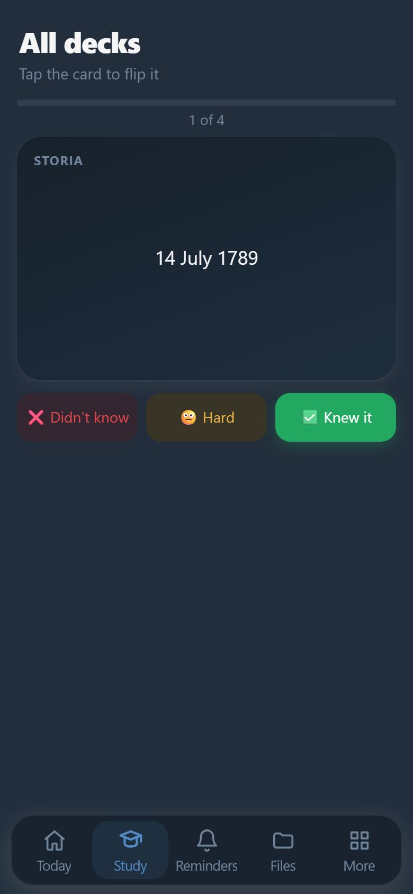

Costruisco bot che lavorano mentre io studio.
Sono Mykhailo, studente di informatica in Italia. Il mio assistente MikyCore gira sul mio PC: tiene d'occhio i compiti, mi prepara per le verifiche e trova affari su Subito.
- Ci sono ThinkPad buoni su Subito?
- Uno sì: Dell Latitude 7490, i7 con 8 GB, a 150 €. Per questa configurazione il mercato è circa 250 €Spedizione con TuttoSubito, pagamento protetto.
- E domani cosa ho?
- Verifica di fisica alle 10. Ti ho preparato 12 flashcard sul capitolo 4: le ripassiamo stasera alle 21?
Chi sono
Sono ucraino e vivo in Italia, dove frequento il terzo anno di informatica. Mi piace prendere un problema di tutti i giorni — compiti, voti, appunti, annunci online — e scrivere il programma che lo risolve da solo.
Scrivo soprattutto in Python, ma anche in C++, JavaScript, HTML e CSS. Lavoro con modelli di linguaggio in locale (Ollama), con la Bot API e le Mini App di Telegram, e con Playwright per l'automazione del browser. Ogni funzione ha i suoi test automatici.
Parlo ucraino (madrelingua), italiano e inglese.
MikyCore
Un assistente personale su Telegram con un modello di linguaggio che gira interamente sulla mia scheda video da 8 GB: niente abbonamenti, niente dati inviati fuori. Lo uso ogni giorno per la scuola. Sono circa 21 000 righe di codice, con 46 suite di test.
Il percorso di un messaggio
- Il mio telefonoScrivo o mando un vocale su Telegram, anche da scuola.
- Il mio PCQwen3 8B gira sulla RTX 5060 da 8 GB, Whisper trascrive la voce. Nessun servizio a pagamento.
- Più di 100 strumentiClasseviva, Classroom, Subito, Obsidian, posta, browser: il modello sceglie quello giusto.
La risposta torna sul telefono in pochi secondi.



- Sceglie da solo lo strumento giusto
- Ha più di 100 strumenti: promemoria, file, browser, Google Classroom, posta. Nei test sul modello reale sceglie quello giusto nel 98% dei casi.
- Trova affari su Subito
- Legge gli annunci, calcola il prezzo di mercato per modello e configurazione (processore, RAM, generazione), riconosce le truffe e mi scrive solo quando conviene davvero.
- Mi aiuta a studiare
- Trasforma le lezioni in appunti su Obsidian, crea flashcard, mi interroga a voce e assegna un voto, e organizza il ripasso prima delle verifiche.
- Si migliora, con il mio permesso
- Nota dove sbaglia e propone regole, automazioni e perfino nuovi plugin in Python. I plugin girano in una sandbox isolata e partono solo dopo la mia conferma.
- Flowgorithm
- Genera diagrammi di flusso e li verifica eseguendoli con un interprete .fprg scritto da me, che indica l'errore e il blocco esatto.
- Sicuro per scelta
- Le azioni rischiose chiedono conferma, le password non passano mai dal modello, il testo esterno non può dargli ordini, e non aggira le protezioni dei siti.
Lavoro su richiesta
Prendo piccoli progetti e li faccio bene. Prezzi da studente, da concordare in base al lavoro.
- Bot Telegram
- Prenotazioni, menù, promemoria per i clienti, risposte automatiche, mini app. Per negozi, palestre, insegnanti.
- Siti web
- Siti vetrina veloci, fatti bene anche su telefono, pubblicati gratis su GitHub Pages o sul tuo dominio.
- Traduzioni ucraino, italiano, inglese
- Lettere, moduli e aiuto con la burocrazia italiana per chi parla ucraino. Traduzioni non giurate.
- Ripetizioni di informatica
- Python, Flowgorithm e basi di programmazione per studenti più giovani, con esercizi e quiz.
Come lavoriamo
- Mi scriviDue righe su cosa ti serve bastano: il resto lo chiedo io.
- Ricevi una propostaTi mando l'idea, i tempi e il prezzo prima di iniziare. Nessun impegno.
- Lo provi e lo sistemiamoVedi il lavoro mentre lo faccio e correggiamo insieme i dettagli.
Contatti
Scrivimi su Telegram: rispondo di solito in giornata.